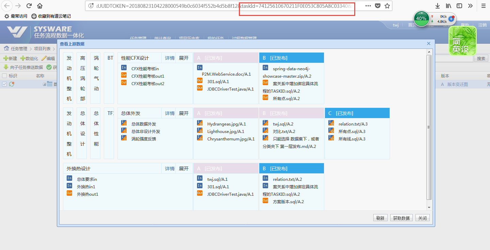
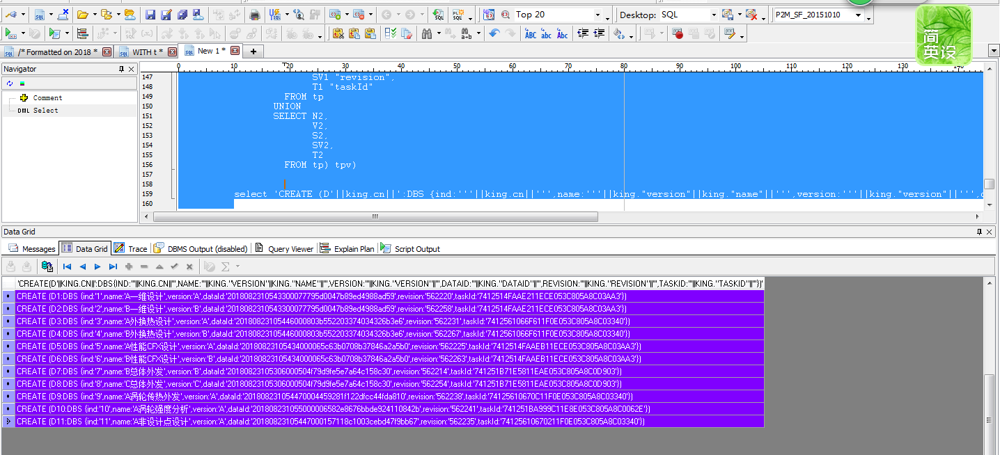
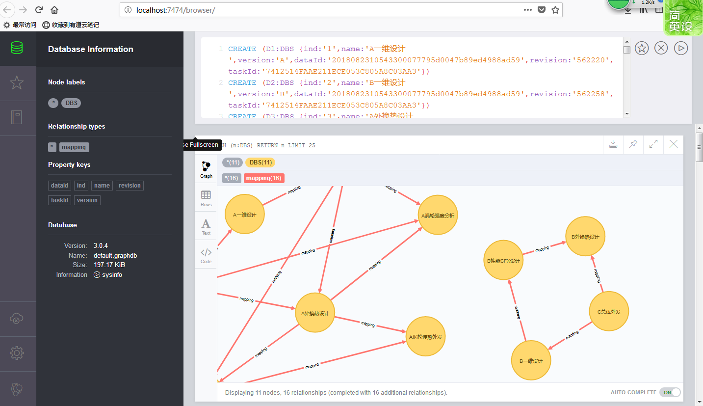
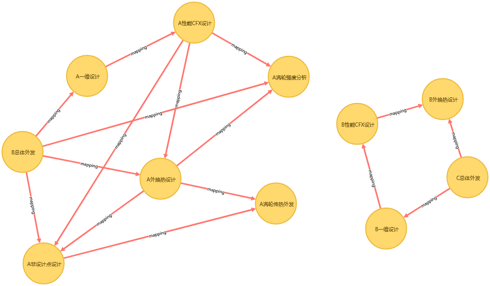

sqldeveloper；
neo4j
xxxxxxxxxx1<!-- 获取成套性实验页面 -->2http://192.168.5.100:8082/sysware/task/grid/view/taskDataTreeGrid.simplemesh?navigationHandlerBeanName=singleMenuHandler&UUIDTOKEN=20180823104228000549b0c6034f552b4d5b8f12&taskId=74125610670211F0E053C805A8C03340&id=74125610670211F0E053C805A8C03340&UUIDTOKEN=20180823104228000549b0c6034f552b4d5b8f12&rootId=74125610670211F0E053C805A8C03340¤tMenuId=2-1-1-1&UUIDTOKEN=20180823104228000549b0c6034f552b4d5b8f1234<!-- twj/123456 -->
1 判断哪个任务节点，成套性有问题，记录有问题的taskId。

2 执行 成套性检查，核心脚本 sql，在 192.168.5.200:1521/sysware P2M_SF_20151010/P2M_SF_20151010 数据库中，抓取数据集历史关系数据。将sql 执行结果 在下一步执行

3 生成 neo4j 脚本，在Neo4j 执行 生成 数据集传递关系图。


如上图，可以看出 一维设计 的B版本 与 总体外发 的B版本 不存在关系
xxxxxxxxxx1/* 获取项目内所有节点 */2/* Formatted on 2018/8/23 13:43:27 (QP5 v5.227.12220.39754) */3WITH t4 AS (SELECT tag.id AS id5 FROM pm_Task_object tag6 WHERE tag.projectId IN7 (SELECT et.projectid8 FROM pm_task_object et9 WHERE et.id = :taskId10 UNION11 SELECT eb.projectid12 FROM pm_task_object eb13 WHERE eb.subprocessid IN14 (SELECT a.process_id15 FROM engine_activity a16 WHERE a.activity_id = :taskId))),17 v18 AS (SELECT r.activity_data_relation_id AS rid,19 fac.action_id AS srcId,20 fac.action_name AS srcName,21 ta.activity_id AS targetId,22 ta.activity_name AS targetName23 FROM engine_activity_data_relation r24 LEFT JOIN engine_activity fa25 ON r.from_activity_id = fa.activity_id26 LEFT JOIN engine_activity_action fac27 ON fa.activity_id = fac.activity_id28 LEFT JOIN engine_activity ta29 ON r.to_activity_id = ta.activity_id30 WHERE r.relationtype = 'DATA'31 AND fa.activity_type = 'TASK_ACTIVITY'32 AND Ta.activity_type <> 'TASK_ACTIVITY'33 AND Ta.activity_type <> 'END_ACTIVITY'34 AND fac.action_id IN (SELECT t.id FROM t)35 UNION36 SELECT r.activity_data_relation_id AS rid,37 fa.activity_id AS srcId,38 fa.activity_name AS srcName,39 tac.action_id AS targetId,40 tac.action_name AS targetName41 FROM engine_activity_data_relation r42 LEFT JOIN engine_activity fa43 ON r.from_activity_id = fa.activity_id44 LEFT JOIN engine_activity ta45 ON r.to_activity_id = ta.activity_id46 LEFT JOIN engine_activity_action tac47 ON ta.activity_id = tac.activity_id48 WHERE r.relationtype = 'DATA'49 AND fa.activity_type <> 'TASK_ACTIVITY'50 AND Ta.activity_type = 'TASK_ACTIVITY'51 AND tac.action_id IN (SELECT t.id FROM t)52 UNION53 SELECT r.activity_data_relation_id AS rid,54 fac.action_id AS srcId,55 fac.action_name AS srcName,56 tac.action_id AS targetId,57 tac.action_name AS targetName58 FROM engine_activity_data_relation r59 LEFT JOIN engine_activity fa60 ON r.from_activity_id = fa.activity_id61 LEFT JOIN engine_activity_action fac62 ON fa.activity_id = fac.activity_id63 LEFT JOIN engine_activity ta64 ON r.to_activity_id = ta.activity_id65 LEFT JOIN engine_activity_action tac66 ON ta.activity_id = tac.activity_id67 WHERE NVL (fac.action_id, '0') <> '0'68 AND NVL (tac.action_id, '0') <> '0'69 AND r.relationtype = 'DATA'70 AND fa.activity_type = 'TASK_ACTIVITY'71 AND Ta.activity_type = 'TASK_ACTIVITY'72 AND tac.action_id IN (SELECT t.id FROM t)73 UNION74 SELECT aso.relationid AS rid,75 aso.srctaskid AS srcId,76 ftc.name AS srcName,77 aso.targettaskid AS targetId,78 ttc.name AS targetName79 FROM pm_task_association aso80 LEFT JOIN pm_task_object ftc ON aso.srctaskid = ftc.id81 LEFT JOIN pm_task_object ttc ON aso.targettaskid = ttc.id82 WHERE aso.targettaskid IN (SELECT t.id FROM t)83 UNION84 SELECT r.activity_data_relation_id AS rid,85 ta.id AS srcId,86 ta.name AS srcName,87 fac.action_id AS targetId,88 fac.action_name AS targetName89 FROM engine_activity_data_relation r90 LEFT JOIN engine_process pb91 ON R.FROM_ACTIVITY_ID = Pb.start_NODE_ID92 LEFT JOIN engine_activity_action fac93 ON R.to_ACTIVITY_ID = fac.activity_id94 LEFT JOIN pm_task_object ta95 ON TA.SUBPROCESSID = pb.process_id96 WHERE NVL (pb.process_id, '0') <> '0'97 AND r.relationtype = 'DATA'98 AND ta.id IN (SELECT t.id FROM t)),99 AIP100 AS (SELECT evt.srcid id101 FROM (SELECT v.*,102 (SELECT COUNT (*)103 FROM v v3104 WHERE v3.targetid = v.srcid)105 cn106 FROM v) evt107 UNION108 SELECT evt.targetid id109 FROM (SELECT v.*,110 (SELECT COUNT (*)111 FROM v v3112 WHERE v3.targetid = v.srcid)113 cn114 FROM v) evt),115 PT116 AS (SELECT D.ID117 FROM PM_DATA_OBJECT D118 WHERE D.DEFAULTSET = 1 AND (d.taskId IN (SELECT AIP.ID FROM AIP))),119 TP120 AS (SELECT TA.NAME N1,121 AD.VERSIONNAME V1,122 A.SRCID S1,123 A.Srcrevision SV1,124 AD.TASKID T1,125 TB.NAME N2,126 BD.VERSIONNAME V2,127 A.TARGETID S2,128 A.TARGETREVISION SV2,129 BD.TASKID T2130 FROM pm_association_relation_old a131 LEFT JOIN pm_Data_object_old ad132 ON a.srcid = ad.id AND a.srcrevision = ad.revision133 LEFT JOIN PM_TASK_OBJECT TA ON AD.TASKID = TA.ID134 LEFT JOIN pm_Data_object_old bd135 ON a.targetid = bd.id AND a.targetrevision = bd.revision136 LEFT JOIN PM_TASK_OBJECT TB ON BD.TASKID = TB.ID137 WHERE a.description IN ('1', '3')138 AND a.srcid IN (SELECT ID FROM PT)139 AND a.targetid IN (SELECT ID FROM PT)140 AND ( ad.statusid IN ('published')141 OR ad.sharestatusid IN ('shared')142 OR (ad.statusid IN ('confirmed')))),143 king144 AS (SELECT ROWNUM cn, tpv.*145 FROM (SELECT N1 "name",146 V1 "version",147 S1 "dataId",148 SV1 "revision",149 T1 "taskId"150 FROM tp151 UNION152 SELECT N2,153 V2,154 S2,155 SV2,156 T2157 FROM tp) tpv)158 159 160 select 'CREATE (D'||king.cn||':DBS {ind:'''||king.cn||''',name:'''||king."version"||king."name"||''',version:'''||king."version"||''',dataId:'''||king."dataId"||''',revision:'''||king."revision"||''',taskId:'''||king."taskId"||'''})' from king; 161 xxxxxxxxxx1/* 项目内所有节点关系 */2/* Formatted on 2018/8/23 13:43:27 (QP5 v5.227.12220.39754) */3WITH t4 AS (SELECT tag.id AS id5 FROM pm_Task_object tag6 WHERE tag.projectId IN7 (SELECT et.projectid8 FROM pm_task_object et9 WHERE et.id = :taskId10 UNION11 SELECT eb.projectid12 FROM pm_task_object eb13 WHERE eb.subprocessid IN14 (SELECT a.process_id15 FROM engine_activity a16 WHERE a.activity_id = :taskId))),17 v18 AS (SELECT r.activity_data_relation_id AS rid,19 fac.action_id AS srcId,20 fac.action_name AS srcName,21 ta.activity_id AS targetId,22 ta.activity_name AS targetName23 FROM engine_activity_data_relation r24 LEFT JOIN engine_activity fa25 ON r.from_activity_id = fa.activity_id26 LEFT JOIN engine_activity_action fac27 ON fa.activity_id = fac.activity_id28 LEFT JOIN engine_activity ta29 ON r.to_activity_id = ta.activity_id30 WHERE r.relationtype = 'DATA'31 AND fa.activity_type = 'TASK_ACTIVITY'32 AND Ta.activity_type <> 'TASK_ACTIVITY'33 AND Ta.activity_type <> 'END_ACTIVITY'34 AND fac.action_id IN (SELECT t.id FROM t)35 UNION36 SELECT r.activity_data_relation_id AS rid,37 fa.activity_id AS srcId,38 fa.activity_name AS srcName,39 tac.action_id AS targetId,40 tac.action_name AS targetName41 FROM engine_activity_data_relation r42 LEFT JOIN engine_activity fa43 ON r.from_activity_id = fa.activity_id44 LEFT JOIN engine_activity ta45 ON r.to_activity_id = ta.activity_id46 LEFT JOIN engine_activity_action tac47 ON ta.activity_id = tac.activity_id48 WHERE r.relationtype = 'DATA'49 AND fa.activity_type <> 'TASK_ACTIVITY'50 AND Ta.activity_type = 'TASK_ACTIVITY'51 AND tac.action_id IN (SELECT t.id FROM t)52 UNION53 SELECT r.activity_data_relation_id AS rid,54 fac.action_id AS srcId,55 fac.action_name AS srcName,56 tac.action_id AS targetId,57 tac.action_name AS targetName58 FROM engine_activity_data_relation r59 LEFT JOIN engine_activity fa60 ON r.from_activity_id = fa.activity_id61 LEFT JOIN engine_activity_action fac62 ON fa.activity_id = fac.activity_id63 LEFT JOIN engine_activity ta64 ON r.to_activity_id = ta.activity_id65 LEFT JOIN engine_activity_action tac66 ON ta.activity_id = tac.activity_id67 WHERE NVL (fac.action_id, '0') <> '0'68 AND NVL (tac.action_id, '0') <> '0'69 AND r.relationtype = 'DATA'70 AND fa.activity_type = 'TASK_ACTIVITY'71 AND Ta.activity_type = 'TASK_ACTIVITY'72 AND tac.action_id IN (SELECT t.id FROM t)73 UNION74 SELECT aso.relationid AS rid,75 aso.srctaskid AS srcId,76 ftc.name AS srcName,77 aso.targettaskid AS targetId,78 ttc.name AS targetName79 FROM pm_task_association aso80 LEFT JOIN pm_task_object ftc ON aso.srctaskid = ftc.id81 LEFT JOIN pm_task_object ttc ON aso.targettaskid = ttc.id82 WHERE aso.targettaskid IN (SELECT t.id FROM t)83 UNION84 SELECT r.activity_data_relation_id AS rid,85 ta.id AS srcId,86 ta.name AS srcName,87 fac.action_id AS targetId,88 fac.action_name AS targetName89 FROM engine_activity_data_relation r90 LEFT JOIN engine_process pb91 ON R.FROM_ACTIVITY_ID = Pb.start_NODE_ID92 LEFT JOIN engine_activity_action fac93 ON R.to_ACTIVITY_ID = fac.activity_id94 LEFT JOIN pm_task_object ta95 ON TA.SUBPROCESSID = pb.process_id96 WHERE NVL (pb.process_id, '0') <> '0'97 AND r.relationtype = 'DATA'98 AND ta.id IN (SELECT t.id FROM t)),99 AIP100 AS (SELECT evt.srcid id101 FROM (SELECT v.*,102 (SELECT COUNT (*)103 FROM v v3104 WHERE v3.targetid = v.srcid)105 cn106 FROM v) evt107 UNION108 SELECT evt.targetid id109 FROM (SELECT v.*,110 (SELECT COUNT (*)111 FROM v v3112 WHERE v3.targetid = v.srcid)113 cn114 FROM v) evt),115 PT116 AS (SELECT D.ID117 FROM PM_DATA_OBJECT D118 WHERE D.DEFAULTSET = 1 AND (d.taskId IN (SELECT AIP.ID FROM AIP))),119 TP120 AS (SELECT TA.NAME N1,121 AD.VERSIONNAME V1,122 A.SRCID S1,123 A.Srcrevision SV1,124 AD.TASKID T1,125 TB.NAME N2,126 BD.VERSIONNAME V2,127 A.TARGETID S2,128 A.TARGETREVISION SV2,129 BD.TASKID T2130 FROM pm_association_relation_old a131 LEFT JOIN pm_Data_object_old ad132 ON a.srcid = ad.id AND a.srcrevision = ad.revision133 LEFT JOIN PM_TASK_OBJECT TA ON AD.TASKID = TA.ID134 LEFT JOIN pm_Data_object_old bd135 ON a.targetid = bd.id AND a.targetrevision = bd.revision136 LEFT JOIN PM_TASK_OBJECT TB ON BD.TASKID = TB.ID137 WHERE a.description IN ('1', '3')138 AND a.srcid IN (SELECT ID FROM PT)139 AND a.targetid IN (SELECT ID FROM PT)140 AND ( ad.statusid IN ('published')141 OR ad.sharestatusid IN ('shared')142 OR (ad.statusid IN ('confirmed')))),143 king144 AS (SELECT ROWNUM cn, tpv.*145 FROM (SELECT N1 "name",146 V1 "version",147 S1 "dataId",148 SV1 "revision",149 T1 "taskId"150 FROM tp151 UNION152 SELECT N2,153 V2,154 S2,155 SV2,156 T2157 FROM tp) tpv)158 159 160 -- select 'CREATE (D'||king.cn||':DBS {ind:'||king.cn||',name:'||king."version"||king."name"||',version:'||king."version"||',dataId:'||king."dataId"||',revision:'||king."revision"||',taskId:'||king."taskId"||'})' from king; 161 162, keaf as (SELECT (SELECT king.cn163 FROM king164 WHERE king."dataId" = tp.s1 AND king."revision" = tp.sv1)165 s,166 (SELECT king.cn167 FROM king168 WHERE king."dataId" = tp.s2 AND king."revision" = tp.sv2)169 e170 FROM tp )171 172 select 'CREATE (D'||keaf.s||')-[:mapping]->(D'||keaf.e||')' from keaf;
281CREATE (D1:DBS {ind:'1',name:'A一维设计',version:'A',dataId:'2018082310543300077795d0047b89ed4988ad59',revision:'562220',taskId:'7412514FAAE211ECE053C805A8C03AA3'})2CREATE (D2:DBS {ind:'2',name:'B一维设计',version:'B',dataId:'2018082310543300077795d0047b89ed4988ad59',revision:'562258',taskId:'7412514FAAE211ECE053C805A8C03AA3'})3CREATE (D3:DBS {ind:'3',name:'A外换热设计',version:'A',dataId:'20180823105446000803b552203374034326b3e6',revision:'562231',taskId:'7412561066F611F0E053C805A8C03340'})4CREATE (D4:DBS {ind:'4',name:'B外换热设计',version:'B',dataId:'20180823105446000803b552203374034326b3e6',revision:'562267',taskId:'7412561066F611F0E053C805A8C03340'})5CREATE (D5:DBS {ind:'5',name:'A性能CFX设计',version:'A',dataId:'20180823105434000065c63b0708b37846a2a5b0',revision:'562225',taskId:'7412514FAAEB11ECE053C805A8C03AA3'})6CREATE (D6:DBS {ind:'6',name:'B性能CFX设计',version:'B',dataId:'20180823105434000065c63b0708b37846a2a5b0',revision:'562263',taskId:'7412514FAAEB11ECE053C805A8C03AA3'})7CREATE (D7:DBS {ind:'7',name:'B总体外发',version:'B',dataId:'20180823105306000504f79d9fe5e7a64c158c30',revision:'562214',taskId:'741251B71E5811EAE053C805A8C0D903'})8CREATE (D8:DBS {ind:'8',name:'C总体外发',version:'C',dataId:'20180823105306000504f79d9fe5e7a64c158c30',revision:'562254',taskId:'741251B71E5811EAE053C805A8C0D903'})9CREATE (D9:DBS {ind:'9',name:'A涡轮传热外发',version:'A',dataId:'201808231054470004459281f122dfcc44fda810',revision:'562238',taskId:'74125610670C11F0E053C805A8C03340'})10CREATE (D10:DBS {ind:'10',name:'A涡轮强度分析',version:'A',dataId:'201808231055000006582e8676bbde924110842b',revision:'562241',taskId:'741251BA999C11E8E053C805A8C0062E'})11CREATE (D11:DBS {ind:'11',name:'A非设计点设计',version:'A',dataId:'20180823105447000157118c1003cebd47f9bb67',revision:'562235',taskId:'74125610670211F0E053C805A8C03340'})1213CREATE (D3)-[:mapping]->(D9)14CREATE (D11)-[:mapping]->(D9)15CREATE (D7)-[:mapping]->(D10)16CREATE (D5)-[:mapping]->(D10)17CREATE (D3)-[:mapping]->(D10)18CREATE (D2)-[:mapping]->(D6)19CREATE (D7)-[:mapping]->(D1)20CREATE (D1)-[:mapping]->(D5)21CREATE (D8)-[:mapping]->(D2)22CREATE (D8)-[:mapping]->(D4)23CREATE (D6)-[:mapping]->(D4)24CREATE (D7)-[:mapping]->(D3)25CREATE (D5)-[:mapping]->(D3)26CREATE (D7)-[:mapping]->(D11)27CREATE (D5)-[:mapping]->(D11)28CREATE (D3)-[:mapping]->(D11)